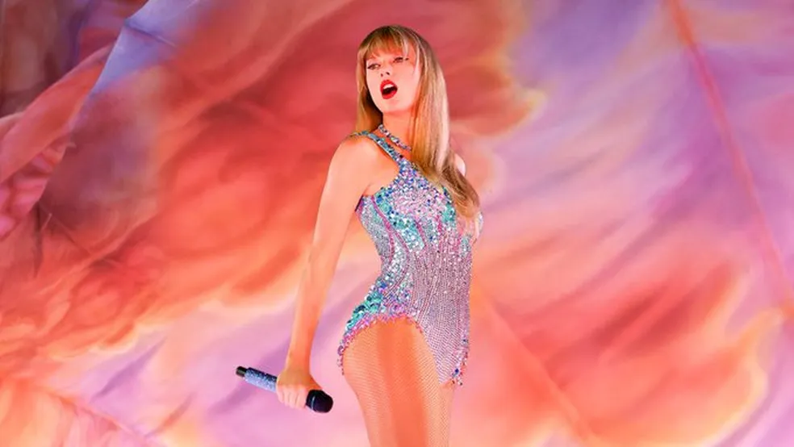

Artistas da Moda
Conheça os principais artistas que estão dominando as paradas musicais e moldando a cultura pop atual.

Taylor Swift
Com seu álbum *Midnights*, Taylor redefiniu o pop moderno e continua sendo uma força na música mundial.
Bad Bunny
O maior nome do reggaeton, Bad Bunny quebra barreiras culturais com músicas que conquistam milhões.
Billie Eilish
A jovem artista traz uma abordagem única ao pop alternativo, conquistando fãs com seu estilo autêntico.